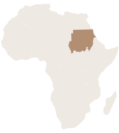

أول مركز بحوث خاص في السودان · مستقل منذ ٢٠٠٣
أدلّة نجمعها وجهاً لوجه في أنحاء السودان.
يصمّم المركز المسوح، وينفّذ العمل الميداني، ويحلّل النتائج التي تعتمد عليها الحكومات ووكالات الأمم المتحدة والمنظمات غير الحكومية. وما يتوصّل إليه يعود إلى المجتمعات التي جاء منه.

من عملنا معهم
- المجلس القومي لرعاية الطفولة
- وزارة الصحة الاتحادية
- وزارة الشؤون الاجتماعية
- جامعة الخرطوم
- جامعة الأحفاد للبنات
- معمل الأوبئة
تيّاران، ومركزٌ واحد.
في الخرطوم يلتقي النيل الأزرق بالنيل الأبيض. وعلى الفكرة نفسها قام مركز إبسا: البحث الرصين والانخراط المجتمعي أقوى حين يجريان في تيّار واحد.
بيانات موثوقة لقرارات مستنيرة
منذ عام ٢٠٠٣ ينتج المركز المسوح والإحصاءات والتقييمات التي تعتمد عليها الحكومات والمنظمات الدولية وغير الحكومية في التخطيط والتمويل وتصحيح المسار.
- بحوث اجتماعية وصحية واقتصادية وتنموية
- تصميم المسوح وجمع البيانات ميدانياً
- التحليل الإحصائي والرصد والتقييم
- توصيات سياساتية قائمة على الأدلة
معرفة تعود إلى الناس
لا تبقى نتائج البحث حبيسة التقارير. فمن خلال ورش العمل والبرامج التعليمية وحملات التوعية، يحوّل المركز الأدلة إلى حوارات تستطيع المجتمعات أن تعمل بها.
- الصحة العامة والممارسات الثقافية
- المساواة بين الجنسين وحماية الطفل
- الأعراف الاجتماعية وحقوق الإنسان
- إنهاء تشويه الأعضاء التناسلية الأنثوية
«ينبغي ألّا يكتفي البحث بإنتاج المعرفة، بل أن يمكّن المجتمعات من تحسين نوعية حياتها.»
المبدأ التأسيسي لمركز إبسا
ما نقدّمه
يُصمَّم كل عمل حول القرار الذي يُفترض أن يستنير به، كمّياً كان أم نوعياً، كبيراً أم صغيراً. ولا يعمل المركز إلا على مناهج البحث، ولذلك يعرف ما تتطلّبه هذه الدراسات.
-
تصميم البحوث وبحوث السياسات
دراسات قائمة على الأدلة تُبنى حول سؤال حقيقي في السياسات أو البرامج، من مراجعة الأدبيات إلى التوصيات النهائية.
المخرجاتبروتوكول الدراسة · تقرير فني · موجز سياسات -
تصميم المسوح
استبانات وأُطر معاينة واختبارات قبلية، تُعدّ بالعربية والإنجليزية لتصل الأسئلة إلى المستجيبين بلغة طبيعية.
المخرجاتاستبانة · خطة معاينة · دليل الباحث الميداني -
جمع البيانات
فرق ميدانية مدرَّبة تنفّذ مسوح الأسر ومقابلات المُخبرين الرئيسيين ومجموعات النقاش المركّزة وجهاً لوجه، مع أساليب عبر الإنترنت والهاتف حيث تصل أبعد.
المخرجاتقاعدة بيانات منقّاة · تقرير ميداني · سجل جودة البيانات -
التحليل الإحصائي
تحليل وصفي واستدلالي وترجيح وبناء مؤشرات، يُعرض بحيث يقرأ غير المتخصص النتيجة ويثق بها.
المخرجاتجداول التحليل · مجموعة مؤشرات · رسوم بيانية -
الرصد والتقييم
دراسات خط الأساس والمنتصف والنهاية، وأطر النتائج والتقييمات التي تُخبر الشركاء بما ينجح وما يحتاج إلى تغيير.
المخرجاتإطار الرصد والتقييم · تقرير تقييم · موجز تعلُّم -
التوصيات والنشر
توصيات عملية لصنّاع القرار، ونتائج تعود إلى المجتمعات بلغة واضحة عبر الجلسات التعريفية وورش العمل.
المخرجاتمذكّرة توصيات · جلسة تعريفية مجتمعية · عرض تقديمي -
التدريب على مناهج البحث
دورات وبرامج داخلية في المناهج الإحصائية وممارسة المسوح وجمع البيانات، لفرق البحث ولموظفي العملاء الذين يحتاجون إلى إجراء دراساتهم بأنفسهم.
المخرجاتبرنامج تدريبي · مواد تدريبية · باحثون مدرَّبون -
بحوث السلوك وتقييم الحملات
دراسات لما يُبقي السلوك قائماً وما يغيّره، بما في ذلك تقييم الحملات العامة والبحث بين فئات سكانية متنوّعة ثقافياً.
المخرجاتنموذج سلوكي · تقييم حملة · تقسيم الفئات -
قياس رضا المتعاملين
تصميم المسوح وأنظمة التغذية الراجعة للجهات الحكومية والشركات، مع تدريب يمكّن الموظفين من إجراء دراسات الرضا وقراءتها بأنفسهم لاحقاً.
المخرجاتمؤشر رضا · نظام تغذية راجعة · تدريب الموظفين
أربعة مجالات، ومنهج واحد.
الانضباط نفسه في دقّة المعاينة واحترام المستجيب وأمانة التحليل يسري في كل مجال يعمل فيه المركز.
الاجتماعي
الأعراف الاجتماعية والممارسات الثقافية والنوع الاجتماعي وحماية الطفل، والظروف المعيشية الكامنة خلفها.
الصحي
المعارف والاتجاهات والممارسات الصحية، والوصول إلى الخدمات، ونتائج تغيير السلوك.
الاقتصادي
سبل العيش والأسواق ودخل الأسرة وأداء الأعمال، مع الرصد البيئي حيث يتصل بها.
التنموي
رصد البرامج وتقييمها عبر القطاعات، من أجل تنمية مستدامة تبقى بعد انتهاء المشروع.
أعمال مختارة
سجلّ من المشاريع التي صُمّمت ونُفّذت وسُلّمت وفق معايير دقيقة. دراسات بأسمائها، وأين أُجريت، وبأي منهج، ومع من.
-
 خمس سنوات
خمس سنواتتقييم حملة سليمة
على مدى خمس سنوات قاد المركز تقييم حملة سليمة، وقيّمها بوصفها استراتيجية وطنية للتخلّي عن تشويه الأعضاء التناسلية الأنثوية. وسليمة مبادرة لليونيسف والمجلس القومي لرعاية الطفولة.
اليونيسف · المجلس القومي لرعاية الطفولة
-
 ٢٠١٢
٢٠١٢تصوّرات الجمهور عن حملة سليمة
دراسة لكيفية فهم الجمهور لحملة سليمة واستجابته لها، أُجريت في الخرطوم بمبادرة مشتركة بين المركز واليونيسف.
الخرطوم · بالاشتراك مع اليونيسف
-
 ٢٠١٢
٢٠١٢الانتشار والمعتقد والجاهزية للإنهاء
مسح سريع في الدمازين لقياس انتشار تشويه الأعضاء التناسلية الأنثوية، والمعتقدات السائدة التي تُبقيه، ومدى استعداد المجتمع لإنهائه.
الدمازين · مسح سريع
-
 ٢٠١١
٢٠١١تصوّرات برامج الإنهاء
مجموعات نقاش مركّزة في أنحاء دارفور لاستكشاف نظرة المجتمعات إلى البرامج العاملة على إنهاء تشويه الأعضاء التناسلية الأنثوية، بمبادرة مشتركة مع اليونيسف.
دارفور · مجموعات نقاش، بالاشتراك مع اليونيسف
-
 ٢٠٠٦
٢٠٠٦العمل الميداني في سنار
تصميم المسح وجمع البيانات وجهاً لوجه في سنار، من أوائل العمليات الميدانية الكبيرة للمركز واختبار مبكر لقدرته على إدارة عمل ميداني معقّد.
سنار · مسح أسري
-
 مستمر
مستمرقياس رضا المتعاملين
كان المركز رائداً في القياس الإحصائي لرضا المتعاملين في السودان، فصمّم مناهج المسوح وأنظمة التغذية الراجعة، ثم درّب موظفي العملاء على إجراء دراساتهم وقراءتها بأنفسهم.
جهات حكومية · شركات تجارية
البرنامج الأبرز
حملة سليمة
أطول ارتباطات المركز، والعمل الذي يُعرف به أكثر من غيره.
سليمة حملة وطنية للتخلّي عن تشويه الأعضاء التناسلية الأنثوية، ينفّذها المجلس القومي لرعاية الطفولة مع اليونيسف. و«سليمة» في العربية هي المعافاة التي لم يمسسها أذى.
قاد المركز تقييم الحملة على مدى خمس سنوات، وقيّمها بوصفها استراتيجية لا مجموعة أنشطة: هل غيّرت ما يعتقده الناس، وما يجرؤون على قوله، وما يفعلونه في النهاية.
وفي الخرطوم عام ٢٠١٢ أجرى المركز دراسة منفصلة لكيفية فهم الجمهور للحملة واستجابته لها، بالاشتراك مع اليونيسف. وقاس عمل ميداني متصل الانتشار وجاهزية المجتمع في الدمازين، واستكشف عبر مجموعات نقاش في دارفور نظرة المجتمعات إلى برامج الإنهاء.
ثم صار هذا العمل بحثاً قائماً بذاته. إذ تطبّق أطروحة الدكتورة ندى الأسد للدكتوراه النظرية المُجزّأة للسلوك المخطط على التخلّي عن تشويه الأعضاء التناسلية الأنثوية في المجتمع السوداني، فتختبر أي المعتقدات والضغوط الاجتماعية والقدرة المُدرَكة تحرّك قرار الأسرة فعلاً.

- الدور
- قيادة التقييم
- المدة
- خمس سنوات
- الشركاء
- اليونيسف · المجلس القومي لرعاية الطفولة
- الميدان
- الخرطوم · الدمازين · دارفور
من الميدان
البيانات الجيدة تُجمع وجهاً لوجه. باحثو المركز الميدانيون يعملون في الأسواق والورش والبيوت حيث تجري الحياة اليومية فعلاً.
أين قادنا العمل
- الخرطوممقرّ المركز، ونقطة الارتكاز لتقييم حملة سليمة على مدى خمس سنوات مع اليونيسف والمجلس القومي لرعاية الطفولة.
- الدمازينمسح سريع لقياس انتشار ختان الإناث، والعوامل التي تُبقي عليه، ومدى استعداد المجتمع للتخلّي عنه. ٢٠١١.
- سنارتصميم المسح وجمع البيانات وجهاً لوجه، من أوائل العمليات الميدانية الكبيرة للمركز. ٢٠٠٦.
- شمال كردفانورشة مشتركة ضمن حملة سليمة مع وزارة الصحة والتنمية الاجتماعية بالولاية والمجلس القومي لرعاية الطفولة.
- دارفورمناقشات مجموعات مركّزة حول كيف ترى المجتمعات البرامج العاملة على إنهاء ختان الإناث، بالاشتراك مع اليونيسف.
المناطق المظلّلة متنازع عليها أو غير محدّدة بعد. ترسيم الحدود يتبع الممارسة الكارتوغرافية للأمم المتحدة ولا يعني أي إقرار.


مدرَّبون، من أهل المكان، ومسؤولون
يستقطب المركز فرقه الميدانية ويدرّبها، وتتحدث لغات المجتمعات التي تزورها، وتلتزم ببروتوكولات مكتوبة للموافقة والخصوصية وجودة البيانات.
كيف تسير الدراسة
من أول اجتماع لتحديد النطاق إلى آخر جلسة تعريفية مع المجتمع، تغذّي كل مرحلة ما بعدها. والخطوة الأخيرة هي ما يميّز المركز.
تحديد النطاق
الاتفاق على القرار الذي ستخدمه الأدلة، والمجتمع المستهدف، والجدول الزمني، والميزانية.
التصميم
استراتيجية المعاينة، والأدوات بالعربية والإنجليزية، وإجراءات الأخلاقيات والموافقة.
الجمع الميداني
باحثون مدرَّبون يجمعون البيانات وجهاً لوجه، مع فحوص جودة يومية.
التحليل
تنقية البيانات والترجيح والتحليل الإحصائي وعرض النتائج بوضوح.
التوصيات
توصيات عملية مرتّبة بالأولوية، مكتوبة لمن سينفّذها.
العودة إلى المجتمع
تعود النتائج إلى المشاركين عبر الجلسات التعريفية وورش العمل وجلسات التوعية.
الانخراط المجتمعي
معرفة تعود إلى المجتمع.
يقدّم المركز برامج تعليمية وورش عمل وحملات توعية حول القضايا التي تشكّل حياة الناس، تقودها الأدلة وتقوم على المشاركة. وتُنشر النتائج ليستفيد منها المجتمع والممارسون والشركاء.
- الصحة العامة
- الممارسات الثقافية
- الأعراف الاجتماعية
- المساواة بين الجنسين
- حماية الطفل
- حقوق الإنسان

إنهاء تشويه الأعضاء التناسلية الأنثوية بالأدلة
أطول برامج المركز عمراً يتناول تشويه الأعضاء التناسلية الأنثوية. ويتعامل معه المركز بوصفه مسألة بحثية لا رسالة صحية وحسب، فيجمع بين التوعية والتسويق الاجتماعي ودراسات تغيير السلوك التي تقيس ما يُحدث التغيير فعلاً.
ويمتد المنهج نفسه إلى الممارسات الضارة عموماً: تقاليد متوارثة تستمر دون سند علمي أو اجتماعي كافٍ. يبحث المركز في ما يُبقي الممارسة قائمة، ويختبر ما يغيّرها، ثم يعيد النتائج إلى الأسر والمجتمعات التي تملك قرار استمرارها من عدمه.


عن المركز
مؤسسة بحثية سودانية، منذ عام ٢٠٠٣.
مركز إبسا للبحوث مؤسسة بحثية سودانية تأسّست في السودان، ويمتد عملها وشراكاتها في أنحاء السودان وخارجه. أسّستها الدكتورة ندى الأسد عام ٢٠٠٣ مع مجموعة من الإحصائيين، وكانت أول مركز بحوث خاص في السودان، وتعمل منظمةً مستقلة للبحث والتنمية المجتمعية ملتزمةً بالحياد.
وعلى مدى أكثر من عشرين عاماً بنى المركز خبرة عميقة في البحوث الاجتماعية والصحية والاقتصادية والتنموية، يقدّم بيانات موثوقة وتوصيات عملية تدعم صنع القرار المستنير والتنمية المستدامة. ومن خلال البحث والتعليم والتوعية يكون المركز أيضاً منبراً تصل عبره الأدلة إلى من يستطيع العمل بها، ويسعى إلى تطوير ممارسة البحث في السودان وأفريقيا.
- التأسيس
- ٢٠٠٣
- الاسم
- النهضة لإحصاءات الأعمال والتدقيق العلمي
- المؤسِّسة
- د. ندى الأسد
- المنشأ
- تأسّس في السودان
- الصفة
- مركز بحوث مستقل
- النطاق
- أنحاء السودان وخارجه
- اللغات
- العربية · الإنجليزية


المؤسِّسة والمديرة
د. ندى الأسد
باحثة · محاضِرة · مؤسِّسة مركز إبسا للبحوث
أسّست الدكتورة ندى الأسد مركز إبسا عام ٢٠٠٣ وتقوده منذ ذلك الحين. درست الاقتصاد القياسي والإحصاء الاجتماعي في جامعة الخرطوم، ثم نالت الماجستير في الاقتصاد من الجامعة نفسها، وأكملت الدكتوراه في إدارة الأعمال من الجامعة الأوروبية في قبرص عام ٢٠٢٣.
بدأت مسيرتها في برنامج الأمم المتحدة الإنمائي والوكالة الأمريكية للتنمية الدولية بالخرطوم. وحاضرت في جامعة الخرطوم وجامعة الأحفاد بأم درمان، وعملت مستشارة بحثية لليونيسف من ٢٠١٢ إلى ٢٠١٧.
يتركّز بحثها على الممارسات الاجتماعية التي تنتهك حقوق الإنسان، مستخدمةً نمذجة المعادلات البنائية والتحليل الإحصائي لاختبار ما إذا كانت البرامج تُغيّر السلوك فعلاً، وما الذي يحرّك هذا التغيير. ونُشر عملها عن تشويه الأعضاء التناسلية الأنثوية في Global Health Journal وعُرض في مؤتمرات دولية.

السيرة الذاتية
التعليم
- ١٩٩٢بكالوريوس الاقتصاد القياسي والإحصاء الاجتماعي، جامعة الخرطوم
- ٢٠٠٢ماجستير الاقتصاد، جامعة الخرطوم
- ٢٠٠٤دبلوم التسويق، غرفة تجارة وصناعة لندن
- ٢٠٢٣دكتوراه إدارة الأعمال، الجامعة الأوروبية في قبرص
المسيرة المهنية
- ١٩٩٣–٩٤منسّقة مشروع، برنامج الأمم المتحدة الإنمائي
- ١٩٩٤–٩٥مديرة مكتب، الوكالة الأمريكية للتنمية الدولية
- ٢٠٠٣ –مؤسِّسة ومديرة مركز إبسا للبحوث
- ٢٠١٠محاضِرة، جامعة الخرطوم
- ٢٠١١–١٢محاضِرة، جامعة الأحفاد، أم درمان
- ٢٠١٢–١٧مستشارة بحثية، اليونيسف
مجالات البحث والإسهامات
- الممارسات الاجتماعية التي تنتهك حقوق الإنسان، ومنها تشويه الأعضاء التناسلية الأنثوية
- نمذجة المعادلات البنائية والتحليل الإحصائي لتغيّر السلوك
- تقييم فعالية البرامج مع اليونيسف ومنظمات غير حكومية أخرى
- نشرت في Global Health Journal، وقدّمت أوراقاً في WASET ٢٠٢٣ والمؤتمر العالمي لدراسات النوع الاجتماعي والمرأة، مانشستر ٢٠٢٤
- مجالس بحثية للدكتوراه في برلين (٢٠١٩) ونيقوسيا (٢٠٢٠) وقبرص (٢٠٢٢)
- ORCID 0009-0007-1058-7174
تواصل معنا
لنبدأ الحديث.
أخبرنا بالقرار الذي تحتاج إلى أدلة لأجله، أو بالمجتمع الذي تريد الوصول إليه، ونقترح عليك طريقة العمل.
اطلب بحثاً
مسوح وتحليل إحصائي ورصد وتقييم وبحوث سياسات، للمنظمات العاملة في السودان.
شارِكنا برامج مجتمعية
ورش عمل وبرامج تعليمية وحملات توعية في الصحة والمساواة بين الجنسين وحماية الطفل وإنهاء تشويه الأعضاء التناسلية الأنثوية.
تعاون بحثي
دراسات مشتركة مع الجامعات والمؤسسات البحثية، في السودان وعبر أفريقيا.